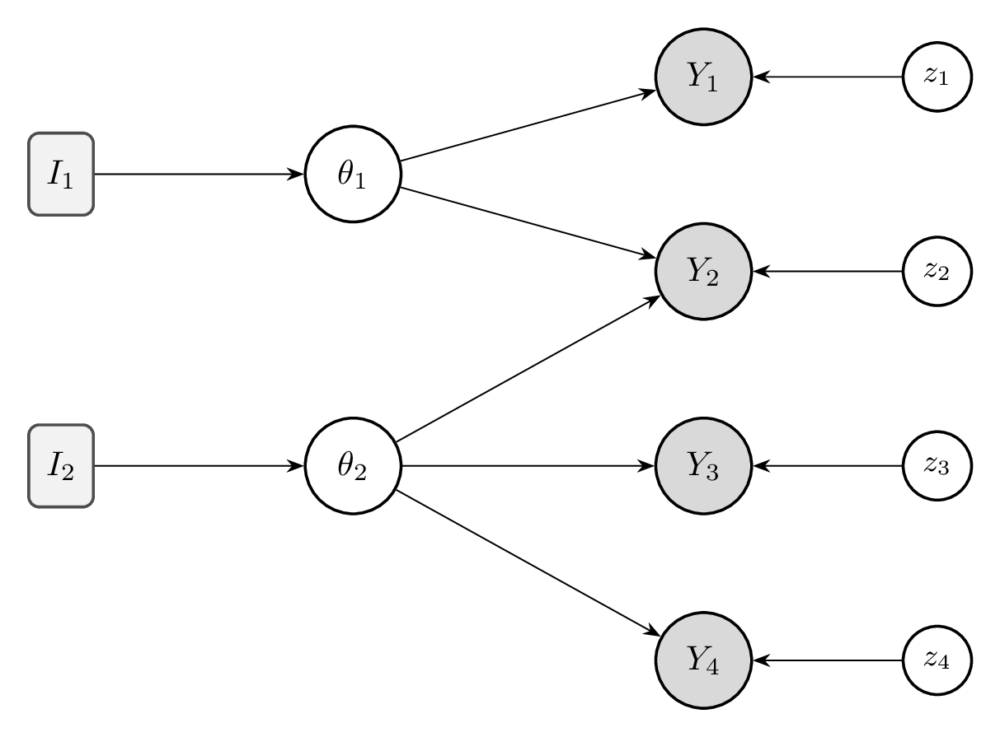
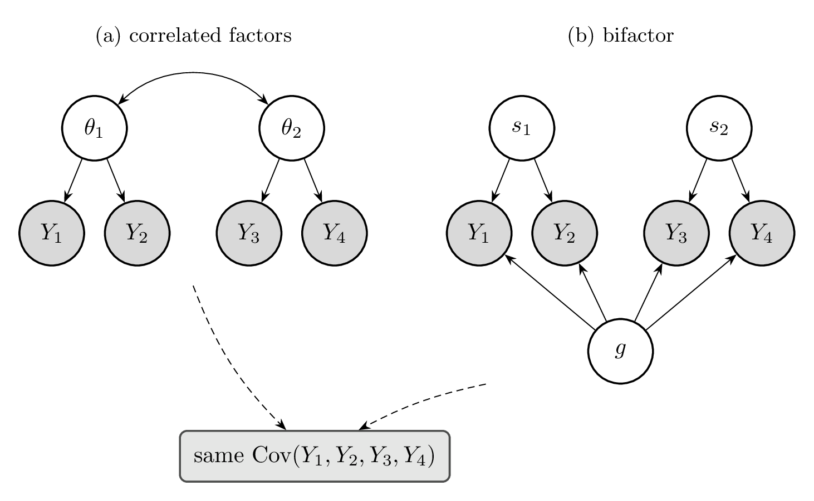
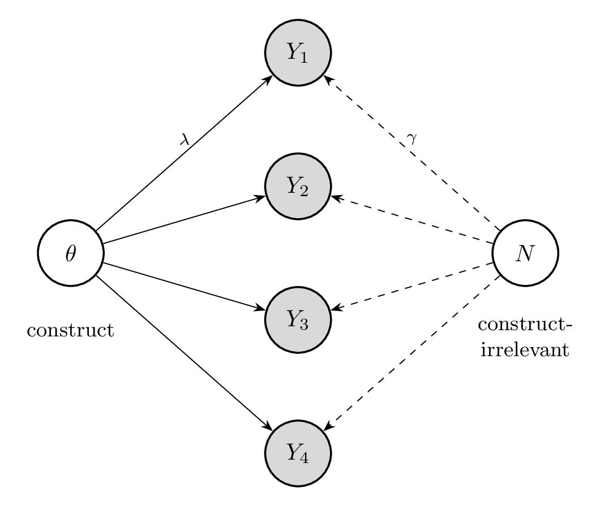

By the end of this chapter, the reader will be able to:
- Frame validity as a question of generalization: distinguish generalization from a sample to its own data distribution (the familiar machine-learning sense) from generalization from benchmark items to the intended construct, and explain why validity concerns the latter.
- Define validity and explain why it cannot be reduced to a single statistic, separating what validity is—the causal, existence-and-causation standard—from how it is established—the modern unitary view that accumulates evidence for an intended interpretation.
- Explain why a construct’s nomological network is underdetermined by observational data (non-identifiability), and why validation is therefore a process of assembling evidence rather than a quantity read off the scores.
- Distinguish content, criterion, construct, external, and consequential validity, and identify what each contributes to the case for an intended interpretation.
- Identify the major threats to validity in AI evaluation—benchmark contamination, construct-irrelevant variance, construct underrepresentation, and differential item functioning—and locate where each is operationally diagnosed later in the book (item-level diagnostics in Section 5.11, generalization failures in Chapter 9).
- Evaluate the validity of existing AI benchmarks using the frameworks presented in this chapter.
This chapter can be covered in 1 lecture (75-90 minutes):
- From scores to claims: validity as a generalization question, and why it is prior (15 min)
- The nomological network and Borsboom’s realist condition; non-identifiability (20 min)
- A taxonomy of validity evidence: content, criterion, construct, external, consequential (30 min)
- Threats to validity in AI evaluation, and where each is diagnosed later in the book (25 min)
A benchmark typically reports a number about specific items: a model answered 430 of 500 questions, won 62% of its matches, passed 18 of 20 held-out tests. But we almost never care about those particular items; we report the number because we expect it to generalize. The sense of generalization familiar from machine learning is from a finite sample to the distribution it was drawn from—test accuracy as an estimate of expected performance on more items of the same kind. The generalization a benchmark is actually used for is more ambitious. When a score is used—to deploy a model, to rank one lab above another, to certify a system as safe—it is read as a statement about a hidden property of the system: reasoning, coding ability, factual reliability, safety. Such a property—a general attribute we cannot observe directly but try to measure through items that depend on it—is called a construct, and it is the central object of this chapter. To read “passed 430 of 500 questions” as “has strong reasoning ability” is to make a larger leap: to claim the score generalizes not merely to more items drawn the same way, but to the construct itself—to differently worded items, other task formats, and the deployment conditions we ultimately care about. Validity is the name for whether that generalization holds.
This kind of generalization is logically prior to the statistical questions that occupy the rest of this book. Larger item pools, tighter confidence intervals, and better estimators all sharpen the first, narrower kind of generalization—they reduce the error in estimating performance on the benchmark’s own distribution—but they say nothing about the second. If performance on the benchmark distribution does not generalize to the construct, a more precise estimate of that performance is of no help.
The leap can fail even when the numbers look impeccable. Consider a coding benchmark whose scores are highly stable—run it twice and the rankings barely move, and every internal consistency check comes back clean. One would naturally conclude that the benchmark is working well. But suppose the items were scraped from a popular programming-tutorial site, and the top-scoring models turn out to be exactly those whose training data included it. The benchmark is not measuring coding ability—it is measuring memorization of specific solutions. The scores are real and reproducible, yet the inference they invite, “these models can code,” is false. A benchmark can be flawless by every internal numerical criterion and still license the wrong claim.
It helps to separate what validity is from how we establish it. As a definition, we adopt the causal standard: an evaluation is valid for a construct when that construct exists and variation in it causally produces variation in the scores. This is a sharp criterion—the scraped coding benchmark fails it because the variation in scores is caused by memorization, not by coding ability—but it is not one we can read directly off the data, since many different causal structures can produce the same observed responses. So in practice we operationalize validity epistemically, following the modern unitary view (Messick 1995): the degree to which evidence and theory support the intended interpretation of a test’s scores. On this view validity is a property of the interpretation we attach to the scores, not of the test in isolation, and establishing it is a matter of assembling evidence for the causal claim the definition demands.
The rest of this chapter builds the apparatus for doing so. We first make the target precise by modeling a construct and its relationship to the items as a nomological network (Section 1.1), which states the causal structure to be tested and makes clear why it is underdetermined by data; we then organize the evidence that bears on an intended interpretation into five kinds (Section 1.2); and we catalog the characteristic ways the item-to-construct inference breaks down in AI evaluation (Section 1.3). The chapter is deliberately conceptual: the tools for operationally detecting these failures build on machinery developed later, so we return to them as item-level diagnostics (Section 5.11) and principles for building trustworthy evaluations (Section 5.12).
1.1 A Network of Constructs
A construct does not exist in isolation. It acquires meaning through its place in a nomological network—a web of lawful relationships connecting a construct to its observable measures and to the downstream outcomes it should predict (Cronbach and Meehl 1955). Throughout this chapter we model constructs as latent variables that causally produce the measures (a single benchmark may probe more than one construct at once). Drawn out, the network is then a graphical model over the constructs, their measurements, and the outcomes they should predict (Frank et al. 2025), and validity becomes the question of whether the relationships we observe are consistent with the structure the network asserts (Figure 1.1). From a causal perspective, Denny Borsboom provides a definition for validity. A measurement instrument is valid for measuring a construct if and only if:
- The construct theoretically exists, and
- Variations in the construct causally produce variations in the measurement response.
First, the construct being measured must exist independent of the measurement itself. If we claim to measure “reasoning” but there is no such thing—if intelligence is better understood as a collection of independent abilities—then no test can validly measure it. Second, the construct must cause variation in measurement responses. It is not enough for test scores to be correlated with the construct; the construct must be the reason for the variation.
A natural next step is to instantiate the construct within the nomological network. One compelling ontological hypothesis is that the construct is the common cause of the responses. The common cause can then be represented as a latent variable in a graphical model. This is the main idea behind latent variable models, such as Item Response Theory, where test responses are generated by a latent ability. The ability is a property of the test taker that exists independently of any particular test and causally produces the responses.
The diagrams in this chapter are graphical models: nodes are variables, and a directed edge \(A \to B\) means \(A\) is among the causes that generate \(B\). Following the standard shading convention, open circles are latent (unobserved) variables—a construct \(\theta\), or an item’s unique factor \(z_j\)—and shaded circles are observed variables, such as a response \(Y_j\). Edges are read generatively, from tail to head: the construct produces the responses, not the other way around. Chapter 3 extends this notation with plates—rectangles that compactly denote replication over many models and items—once we turn to models that estimate these edges.

Reading the network from left to right gives this chapter its structure:
- An intervention \(I\) acts on the causes of a construct \(\theta\)—in AI, the training data, objective, supervised fine-tuning, or RL. This is the handle we use to test whether \(\theta\) genuinely produces the responses (Chapter 9).
- Each construct \(\theta\) causally produces the scores \(Y_j\) on the items that load on it, and an item may load on more than one construct (like \(Y_2\)). This \(\theta \to Y\) pathway is the core of validity.
- Each item also carries an item-specific latent variable \(z_j\): variance unique to that item and not shared with any construct—a source of construct-irrelevant variance.
The constructs ultimately matter because they predict downstream outcomes we care about, such as deployment usefulness; relating scores to those outcomes is the province of criterion and predictive validity (Section 1.2.2).
1.2 A Taxonomy of Validity Evidence
The problem of the nomological network is that it is not identifiable from observational data alone: genuinely different networks can produce exactly the same observed data. Figure 1.2 shows a multi-construct example. Four items split into two abilities, \(\theta\) (measured by \(Y_1, Y_2\)) and \(\theta'\) (measured by \(Y_3, Y_4\)), whose scores are positively correlated. Panel (a) explains that correlation with two correlated factors. Panel (b) explains it with a bifactor model: a general factor \(g\) that loads on all four items, together with orthogonal specific factors \(s_1, s_2\) for each pair. These are substantively different theories of the construct space—“two related abilities” versus “one general ability running through everything, plus residual specifics”—yet they can imply the identical covariance over \(Y_1, \dots, Y_4\), and nothing in the observed responses says which is right.

This is the classic ambiguity of the general factor. A positive correlation among abilities is explained equally well by “the abilities are simply related” (panel a) and by “a general ability runs through them all” (panel b); the bifactor even has extra freedom, so it fits at least as well by construction. The covariance can establish that \(\theta\) and \(\theta'\) covary; it cannot establish why. The same indistinguishability afflicts the meaning of any single construct: whether a benchmark’s shared variance reflects the ability we intend or a construct-irrelevant cause such as memorized text—the scraped coding benchmark from the start of this chapter is exactly this trap. Whenever we commit to one network, we are choosing among structures the data cannot separate.
The nomological network thus gives us a definition of validity, but because the structure is underdetermined, it does not let us simply read validity off the data. Validation is instead a process of accumulating evidence. The evidence-accumulation tradition we adopt as our workflow—Cronbach, Messick, Kane, and the claim-centered view—answers an epistemic question: how do we come to know that a test supports its intended interpretation?
The modern view of validity, following Messick (1995) and the Standards for Educational and Psychological Testing, treats validity as a unitary concept: the degree to which evidence supports the intended interpretation of test scores. However, the evidence for validity comes in several distinguishable forms. Following Salaudeen et al. (2025) and the classical framework, we organize validity evidence into five categories.
1.2.1 Content Validity
Content validity concerns whether the benchmark adequately represents the construct domain it claims to measure. The key questions are: Does the benchmark cover the full range of the construct? Are the items relevant? Are important aspects of the construct missing? For AI evaluation, content validity failures are pervasive. A benchmark labeled “reasoning” might contain only arithmetic word problems, missing logical reasoning, causal reasoning, analogical reasoning, and spatial reasoning entirely. A “coding ability” benchmark might test only Python function completion, neglecting debugging, system design, documentation, and code review. Content validity is established through expert judgment rather than statistical analysis. Domain experts review the construct definition, examine the item pool, and assess coverage. In AI evaluation, this step is frequently skipped: benchmarks are constructed from convenience samples of existing data rather than from principled domain specifications.
AI example. Suppose a benchmark claims to measure “scientific reasoning.” Content validity requires asking: Does it include hypothesis generation? Experimental design? Data interpretation? Statistical inference? Causal reasoning? If it tests only factual recall of scientific knowledge, it has poor content validity for the “reasoning” claim, regardless of how reliable the scores are.
1.2.2 Criterion Validity
Criterion validity asks whether benchmark scores predict or correlate with an external criterion that independently captures the construct. There are two subtypes:
- Concurrent validity: the benchmark correlates with a currently available gold standard. For example, an automated coding benchmark should correlate with expert human evaluation of the same code.
- Predictive validity: the benchmark predicts future outcomes of interest. A benchmark for coding assistants should predict how useful the assistant is in actual developer workflows over time.
Criterion validity provides some of the most compelling evidence, but it requires the existence of a trustworthy external criterion—which is often the fundamental problem. If we already had a perfect measure of “reasoning ability,” we would not need the benchmark. The circularity of criterion validation is a recognized challenge in psychometrics (Cronbach and Meehl 1955) and becomes especially acute in AI evaluation, where the construct of interest (e.g., “general intelligence”) may not have any agreed-upon gold standard.
AI example. The Chatbot Arena (Zheng et al. 2023) collects pairwise human preferences as a criterion for model quality. A benchmark has concurrent criterion validity if its scores correlate with Arena Elo ratings. But the Arena itself has validity assumptions—are crowdworker preferences a valid criterion for “model quality”?
1.2.3 Construct Validity
Construct validity is the central and most encompassing form of validity evidence. It asks: does the benchmark actually measure the theoretical construct it claims to measure? This goes beyond content coverage and criterion correlation to the internal structure of the measurement. The classical approach to construct validity uses two kinds of evidence:
- Convergent validity: scores on the benchmark should correlate positively with scores on other measures of the same or closely related constructs. If two different “reasoning” benchmarks produce uncorrelated scores, at least one of them has poor construct validity.
- Discriminant validity: scores on the benchmark should not correlate strongly with measures of different constructs. If a “reasoning” benchmark correlates as highly with a “memorization” benchmark as with another reasoning benchmark, the construct is not well separated.
The systematic study of convergent and discriminant validity was formalized by Campbell and Fiske (1959) through the Multitrait-Multimethod (MTMM) matrix, which we develop in Section 5.11.5.
Under Borsboom’s causal framework, construct validity requires a specific causal claim: variation in the latent construct (reasoning ability) causally produces variation in benchmark scores. This is testable—if we could intervene to increase a model’s reasoning ability while holding everything else constant, valid benchmark scores should increase. In practice, such clean interventions are rare, but the causal framing clarifies what we are asking.
AI example. Consider two benchmarks that both claim to measure “mathematical reasoning”: GSM8K (grade-school math word problems) and MATH (competition-level problems). If they measure the same construct, models that excel on one should tend to excel on the other (convergent validity). If “mathematical reasoning” is distinct from “commonsense knowledge,” then GSM8K scores should correlate less with commonsense benchmarks than with MATH (discriminant validity).
1.2.4 External Validity
External validity concerns the generalizability of benchmark results beyond the specific conditions of the evaluation. Does performance on the benchmark predict performance in other contexts, with other populations, or at other times?
For AI systems, external validity questions include:
- Does performance on English-language benchmarks predict multilingual performance?
- Do results on curated, clean test items generalize to noisy, real-world inputs?
- Do benchmark scores from today predict performance after the model is updated?
- Do results generalize across deployment contexts (e.g., from research settings to production)?
External validity connects closely to the problem of distribution shift, which we examine formally in Chapter 9. When the benchmark distribution differs from the target distribution, strong benchmark performance may not transfer.
AI example. A model scores 95% on a medical question-answering benchmark derived from textbook questions. But in a clinical setting, the questions are noisier, contextually embedded, and may involve ambiguous information. The benchmark has poor external validity if the 95% score does not predict clinically useful performance.
1.2.5 Consequential Validity
Consequential validity, introduced by Messick (1995), asks whether the social consequences of using benchmark scores are appropriate. This is the most controversial form of validity evidence, as it extends validity beyond measurement science into ethics and policy. In AI evaluation, consequential validity is increasingly important:
- Goodhart’s law: When a benchmark becomes a target, models are optimized for it, and the benchmark ceases to measure the original construct. Training on benchmark-like data improves scores without improving capability.
- Development distortion: Benchmarks that are easy to optimize attract disproportionate effort, even if they measure less important capabilities.
- Misuse of rankings: Leaderboard positions are used to make deployment decisions, marketing claims, and policy arguments that go far beyond what the scores support.
Consequential validity does not mean that benchmarks are “invalid” whenever they have negative consequences. Rather, it means that the consequences of score use are relevant evidence when evaluating whether the measurement system is serving its intended purpose.
AI example. A safety benchmark becomes widely used for regulatory compliance. Model developers learn to optimize specifically for the benchmark items, achieving high scores while leaving genuine safety risks unaddressed. The consequential validity of the benchmark is undermined: the scores are being used to support claims (“this model is safe”) that they do not actually support.
1.2.6 Summary
Table 1.1 summarizes the five forms of validity evidence, their key questions, and how they manifest in AI evaluation.
| Form | Key Question | AI Example | Typical Evidence |
|---|---|---|---|
| Content | Does the benchmark cover the construct domain? | “Reasoning” benchmark tests only arithmetic | Expert review, domain specification |
| Criterion | Do scores predict an external criterion? | Benchmark vs. Arena Elo correlation | Correlation with gold standard |
| Construct | Does the benchmark measure the intended construct? | Convergent/discriminant evidence across benchmarks | MTMM matrix, factor analysis |
| External | Do results generalize beyond test conditions? | English benchmark → multilingual performance | Cross-context replication |
| Consequential | Are the social consequences appropriate? | Goodhart’s law on safety benchmarks | Impact analysis, misuse audit |
1.3 Threats to Validity in AI Evaluation
Even well-designed benchmarks face systematic threats that can undermine the validity of the inferences they support. We identify four major categories.
1.3.1 Construct-Irrelevant Variance
Construct-irrelevant variance (CIV) occurs when systematic factors other than the target construct influence benchmark scores. Unlike random noise (which reduces reliability), CIV is systematic and can inflate or deflate scores in predictable ways.
Sources of CIV in AI evaluation include:
- Prompt formatting sensitivity: The same question presented with different formatting (bullet points vs. paragraphs, numbered vs. lettered options) can change model responses substantially (Mizrahi et al. 2024). If the construct is “reasoning,” but scores depend on formatting, the format contributes construct-irrelevant variance.
- Multiple-choice position bias: Many language models show systematic preferences for certain answer positions (e.g., option A or the last option). This inflates scores for items where the correct answer happens to be in the preferred position.
- Tokenization artifacts: Model performance can depend on how text is tokenized, which is an artifact of the model’s vocabulary rather than its ability.
- Language and cultural bias: Items that assume specific cultural knowledge or linguistic patterns may be easier for models trained predominantly on certain data, independent of the target construct.
CIV is particularly insidious because it is systematic: unlike random error, it does not average out with more items. A benchmark full of items with position bias has high reliability (the bias is consistent) but poor validity (the scores reflect position preference, not just the target ability).
Graphically, systematic CIV is an additional parent of the items, sitting alongside the construct (Figure 1.3). Writing the response of model \(i\) to item \(j\) as \[ Y_{ij} \;=\; \underbrace{\lambda_j\,\theta_i}_{\text{construct}} \;+\; \underbrace{\gamma_j\, N_i}_{\text{construct-irrelevant}} \;+\; \underbrace{z_{ij}}_{\text{item-specific}}, \] the nuisance cause \(N\) (formatting sensitivity, position preference, \(\ldots\)) loads on several items through the \(\gamma_j\). This sharing across items is what makes CIV systematic: a cause confined to a single item would collapse into that item’s unique factor \(z_{ij}\) and merely add noise, whereas a cause spread across items acts as a second common factor and biases the construct estimate. The practical consequence turns on whether \(N\) is observed. If \(N\) is observed—answer position, prompt length, language—it can be controlled for or randomized away (counterbalancing position decorrelates it from the score). If \(N\) is latent, it is confounded with \(\theta\): a single benchmark cannot separate the two, and the multitrait-multimethod design of Section 5.11.5 is precisely the tool for doing so.

1.3.2 Construct Underrepresentation
Construct underrepresentation occurs when the benchmark is too narrow, sampling only a limited aspect of the construct it claims to measure. This is the content validity threat from Section 1.2.1 viewed through a different lens.
Examples in AI evaluation:
- Coding ability tested only through function-completion tasks, missing debugging, architecture design, code review, documentation, and refactoring.
- Language understanding tested only with formal, well-edited text, missing colloquial language, code-switching, and domain-specific jargon.
- Safety tested only through adversarial prompts in English, missing multilingual attacks, multi-turn manipulation, and system-prompt override attempts.
Construct underrepresentation is often a consequence of convenience sampling: benchmarks are built from data that is easy to collect and annotate, not from a principled specification of the construct domain.
1.3.3 Benchmark Contamination
Benchmark contamination occurs when evaluation items appear in the model’s training data, allowing the model to retrieve memorized answers rather than demonstrating the target capability. This is arguably the most discussed validity threat in current AI evaluation.
Contamination can be direct (exact match between training and test items) or indirect (paraphrases, derivatives, or items from the same source that share structural patterns). Detection approaches include:
- Canary strings: Embedding unique identifiers in benchmark items and testing whether models can reproduce them (Jacovi et al. 2023).
- Membership inference: Statistical tests for whether a model has seen specific items during training.
- Chronological splits: Comparing performance on items created before vs. after the model’s training data cutoff.
- Public/private splits: Items released publicly tend to have inflated scores compared to held-out private items—the gap measures contamination effects.
- Performance discontinuities: If a model’s accuracy on “seen” items is dramatically higher than on matched “unseen” items, contamination is likely.
Under Borsboom’s causal framework, contamination is a validity threat because it introduces an alternative causal path: the model’s response is caused by memory rather than by the target ability. The score no longer reflects the construct it claims to measure.
1.3.4 Differential Item Functioning
A fourth threat is differential item functioning (DIF): an item is systematically easier or harder for one subgroup of test-takers than another after controlling for overall ability. In AI evaluation the “groups” are typically model families, architectures, or training paradigms, and a DIF item rewards a construct-irrelevant feature—a formatting convention, a tokenization quirk—rather than the target ability, making it a group-structured special case of the construct-irrelevant variance of Section 1.3.1. Detecting DIF is an operational task: it reuses the same variance decomposition as reliability (a DIF term is an item-by-group interaction), so we develop its machinery—Mantel-Haenszel, logistic-regression, and IRT-based tests—alongside that decomposition in Section 5.11.1.
1.4 Bibliographic Notes
The conceptual foundations of validity have evolved substantially over the past century. Cronbach and Meehl (1955) introduced the notion of construct validity and the nomological network, arguing that validity requires embedding a construct in a web of theoretical relationships. Messick (1995) unified the previously separate types of validity into a single framework, arguing that all validity is construct validity, with content, criterion, and consequential evidence as facets of a unified concept. Kane (2006) formalized the argument-based approach to validation, which requires specifying the chain of inferences from observed scores to intended interpretations and gathering evidence for each link.
Borsboom (2005) challenged the orthodox framework with a realist account: a test is valid if and only if the target construct exists and causally produces score variation. This causal perspective connects validity to the structural causal models discussed in Chapter 9.
For AI-specific validity, Salaudeen et al. (2025) propose a claim-centered framework that adapts classical validity concepts for benchmark evaluation. Kiela et al. (2021) argue for dynamic benchmarking to combat contamination and Goodhart’s law. Jacovi et al. (2023) address the contamination problem directly, proposing practical strategies for protecting test data. The broader challenges of AI evaluation validity are discussed by Shankar et al. (2024) and Biderman et al. (2024). Truong et al. (2025) demonstrate that item-level validity threats — incorrect answer keys, ambiguous wording, grading bugs — can be detected at scale using reliability diagnostics derived from the Rasch model’s sufficiency property. Their framework achieves up to 84% precision at the top-50 flagged items across nine benchmarks, illustrating how measurement theory yields operational tools for benchmark quality assurance.
The relationship between reliability and validity was previewed in Chapter 5, where we established that reliability is a necessary but not sufficient condition for validity. The causal aspects of validity—particularly the relationship between Borsboom’s causal definition and structural causal models—are developed further in Chapter 9.
1.5 Exercises
Using Borsboom’s causal definition of validity, argue whether “prompt sensitivity” (a model’s score changes when the prompt template is varied, holding the question content constant) is a validity threat or a reliability threat. Under what conditions might it be both?
A coding benchmark produces scores with test-retest reliability of 0.95 and Cronbach’s alpha of 0.93. Is this sufficient evidence for validity? What additional evidence would be needed, and why?
How does benchmark contamination differ from construct-irrelevant variance? Describe a scenario where training data overlap is actually construct-relevant rather than a validity threat.
Goodhart’s law suggests that any benchmark used as an optimization target will eventually lose validity. Does this make consequential validity fundamentally different from the other four forms? Or is it a special case of construct-irrelevant variance?
DIF analysis (developed in Section 5.11.1) identifies items that function differently across groups after controlling for ability. In AI evaluation, when should DIF be treated as a validity problem to be fixed, and when might it reflect a genuine group difference that the benchmark should capture?
Salaudeen et al. (2025) argue that validity should be assessed relative to specific claims rather than as a global property of the benchmark. Borsboom (2005) argues that validity is fundamentally about whether the target construct exists and causally produces score variation. Compare these two frameworks. Under what conditions do they agree? Under what conditions might they disagree? Which framework is more useful for guiding practical benchmark design, and why?